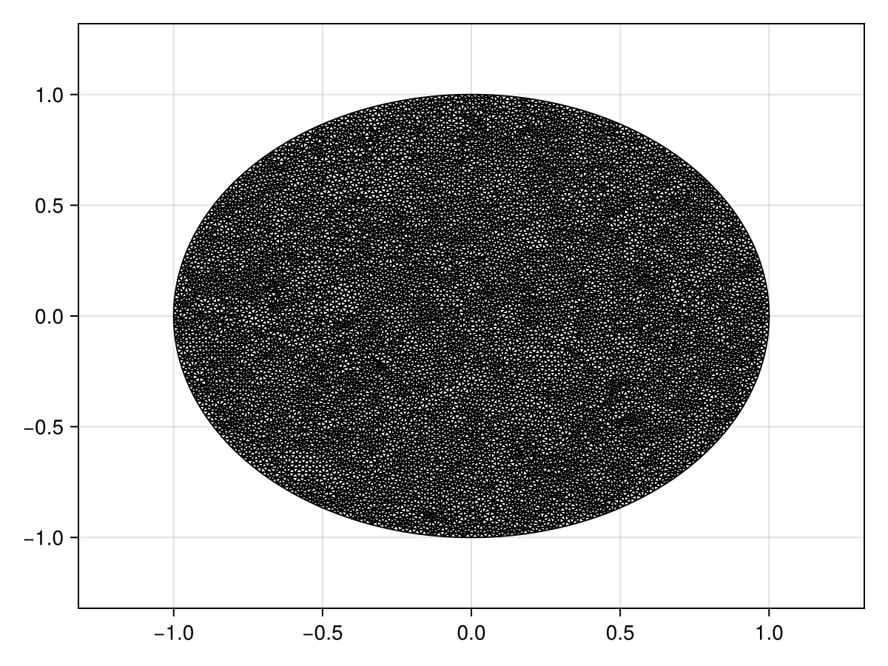

Reaction-Diffusion Equation with a Time-dependent Dirichlet Boundary Condition on a Disk
In this tutorial, we consider a reaction-diffusion equation on a disk with a boundary condition of the form $\mathrm du/\mathrm dt = u$:
\[\begin{equation*} \begin{aligned} \pdv{u(r, \theta, t)}{t} &= \div[u\grad u] + u(1-u) & 0<r<1,\,0<\theta<2\pi,\\[6pt] \dv{u(1, \theta, t)}{t} &= u(1,\theta,t) & 0<\theta<2\pi,\,t>0,\\[6pt] u(r,\theta,0) &= \sqrt{I_0(\sqrt{2}r)} & 0<r<1,\,0<\theta<2\pi, \end{aligned} \end{equation*}\]
where $I_0$ is the modified Bessel function of the first kind of order zero. For this problem the diffusion function is $D(\vb x, t, u) = u$ and the source function is $R(\vb x, t, u) = u(1-u)$, or equivalently the force function is
\[\vb q(\vb x, t, \alpha,\beta,\gamma) = \left(-\alpha(\alpha x + \beta y + \gamma), -\beta(\alpha x + \beta y + \gamma)\right)^{\mkern-1.5mu\mathsf{T}}.\]
As usual, we start by generating the mesh.
using FiniteVolumeMethod, DelaunayTriangulation, ElasticArrays
r = 1.0
circle = CircularArc((0.0, r), (0.0, r), (0.0, 0.0))
points = NTuple{2, Float64}[]
boundary_nodes = [circle]
tri = triangulate(points; boundary_nodes)
A = get_area(tri)
refine!(tri; max_area = 1e-4A)
mesh = FVMGeometry(tri)FVMGeometry with 8854 control volumes, 17450 triangles, and 26303 edgesusing CairoMakie
triplot(tri)
Now we define the boundary conditions and the PDE.
using Bessels
BCs = BoundaryConditions(mesh, (x, y, t, u, p) -> u, Dudt)BoundaryConditions with 1 boundary condition with type Dudtf = (x, y) -> sqrt(besseli(0.0, sqrt(2) * sqrt(x^2 + y^2)))
D = (x, y, t, u, p) -> u
R = (x, y, t, u, p) -> u * (1 - u)
initial_condition = [f(x, y) for (x, y) in DelaunayTriangulation.each_point(tri)]
final_time = 0.10
prob = FVMProblem(mesh, BCs;
diffusion_function = D,
source_function = R,
final_time,
initial_condition)FVMProblem with 8854 nodes and time span (0.0, 0.1)We can now solve.
using OrdinaryDiffEq, LinearSolve
alg = FBDF(linsolve = UMFPACKFactorization(), autodiff = AutoFiniteDiff())
sol = solve(prob, alg, saveat = 0.01)retcode: Success
Interpolation: 1st order linear
t: 11-element Vector{Float64}:
0.0
0.01
0.02
0.03
0.04
0.05
0.06
0.07
0.08
0.09
0.1
u: 11-element Vector{Vector{Float64}}:
[1.2514323512504983, 1.2514323512504983, 1.2514323512504983, 1.2514323512504983, 1.2514323512504983, 1.2514323512504983, 1.2514323512504983, 1.2514323512504983, 1.0, 1.0732643239064652 … 1.0544281803802256, 1.0278697917809356, 1.050105363014073, 1.129334424379758, 1.1302944595434796, 1.0141707069586454, 1.131415662333832, 1.1373686035835673, 1.168483472442193, 1.1328650897717698]
[1.2640096932393192, 1.2640096932393192, 1.2640096932393192, 1.2640096932393192, 1.2640096932393192, 1.2640096932393192, 1.2640096932393192, 1.2640096932393192, 1.0100691198697815, 1.0840675708581347 … 1.06502510629146, 1.0382003917815406, 1.0606590885417895, 1.1407014375253701, 1.1416725889454642, 1.0243664623034296, 1.1427940146890099, 1.148802872871672, 1.180220977501735, 1.1442480141437585]
[1.2767142139585983, 1.2767142139585983, 1.2767142139585983, 1.2767142139585983, 1.2767142139585983, 1.2767142139585983, 1.2767142139585983, 1.2767142139585983, 1.0202226116828597, 1.094964670988523 … 1.0757306172293275, 1.0486358887065717, 1.0713210612932897, 1.152169835498077, 1.153150991246144, 1.0346639322619788, 1.1542834827179145, 1.1603522617370428, 1.192083682170155, 1.1557518022059363]
[1.2895472657287395, 1.2895472657287395, 1.2895472657287395, 1.2895472657287395, 1.2895472657287395, 1.2895472657287395, 1.2895472657287395, 1.2895472657287395, 1.0304768817708885, 1.1059714805888947 … 1.086544849106955, 1.0591771669783236, 1.082090614201698, 1.1637515001097554, 1.1647423327608257, 1.0450643604070022, 1.1658872474584359, 1.1720175455574438, 1.204068967425055, 1.1673709993429908]
[1.3025086480256616, 1.3025086480256616, 1.3025086480256616, 1.3025086480256616, 1.3025086480256616, 1.3025086480256616, 1.3025086480256616, 1.3025086480256616, 1.040834013954382, 1.117088374184073 … 1.097467057360718, 1.0698240946378312, 1.0929681090466952, 1.1754466612434467, 1.1764468999482265, 1.055568335212213, 1.1776062835156067, 1.1837987341448888, 1.21617497132648, 1.1791052900345798]
[1.3156008550448972, 1.3156008550448972, 1.3156008550448972, 1.3156008550448972, 1.3156008550448972, 1.3156008550448972, 1.3156008550448972, 1.3156008550448972, 1.0512978006549691, 1.1283179348303922 … 1.1084989337372864, 1.0805786232381893, 1.103955846030064, 1.1872597967442153, 1.1882695526701856, 1.066178975813763, 1.1894441943633522, 1.1956985554196546, 1.2284014413689797, 1.1909574194968486]
[1.3288251250737908, 1.3288251250737908, 1.3288251250737908, 1.3288251250737908, 1.3288251250737908, 1.3288251250737908, 1.3288251250737908, 1.3288251250737908, 1.0618701246872277, 1.1396614449317093 … 1.1196413181341198, 1.0914417216623384, 1.1150549671275334, 1.1991931297171874, 1.2002127036907926, 1.0768978307617845, 1.2014027690098315, 1.2077183637058557, 1.2407482521917712, 1.20292875064075]
[1.342182537509112, 1.342182537509112, 1.342182537509112, 1.342182537509112, 1.342182537509112, 1.342182537509112, 1.342182537509112, 1.342182537509112, 1.0725526272727866, 1.1511200223405045 … 1.1308949426774153, 1.102414234471212, 1.1262664677824599, 1.2112485980102317, 1.2122784561808306, 1.0877262499045317, 1.2134835669070054, 1.2198593395477983, 1.253215294519714, 1.2150204714956103]
[1.3556743643099993, 1.3556743643099993, 1.3556743643099993, 1.3556743643099993, 1.3556743643099993, 1.3556743643099993, 1.3556743643099993, 1.3556743643099993, 1.0833472424241504, 1.1626949843320544 … 1.142260670103317, 1.113497156893837, 1.1375915210234389, 1.2234284851796602, 1.224469288512824, 1.098665823900668, 1.225688425710154, 1.2321228740966892, 1.2658024395831866, 1.2272339820329716]
[1.3693018774355916, 1.3693018774355916, 1.3693018774355916, 1.3693018774355916, 1.3693018774355916, 1.3693018774355916, 1.3693018774355916, 1.3693018774355916, 1.094255904153823, 1.1743876481816353 … 1.1537393631479687, 1.1246914841592408, 1.1490312998790637, 1.2357350747817846, 1.2367876790592975, 1.1097181434088568, 1.2380191830745566, 1.2445103585037351, 1.2785095586125665, 1.2395706822243744]
[1.383065592137221, 1.383065592137221, 1.383065592137221, 1.383065592137221, 1.383065592137221, 1.383065592137221, 1.383065592137221, 1.383065592137221, 1.1052131369683742, 1.186179635758604 … 1.1653457253571202, 1.135998373970411, 1.1605703200619766, 1.2481461142484267, 1.2492080910804941, 1.1208594909236202, 1.2504385626803913, 1.2570138348231883, 1.2913929100833326, 1.2520310355791093]fig = Figure(fontsize = 38)
for (i, j) in zip(1:3, (1, 6, 11))
ax = Axis(fig[1, i], width = 600, height = 600,
xlabel = "x", ylabel = "y",
title = "t = $(sol.t[j])",
titlealign = :left)
tricontourf!(ax, tri, sol.u[j], levels = 1:0.01:1.4, colormap = :matter)
tightlimits!(ax)
end
resize_to_layout!(fig)
fig
Just the code
An uncommented version of this example is given below. You can view the source code for this file here.
using FiniteVolumeMethod, DelaunayTriangulation, ElasticArrays
r = 1.0
circle = CircularArc((0.0, r), (0.0, r), (0.0, 0.0))
points = NTuple{2, Float64}[]
boundary_nodes = [circle]
tri = triangulate(points; boundary_nodes)
A = get_area(tri)
refine!(tri; max_area = 1e-4A)
mesh = FVMGeometry(tri)
using CairoMakie
triplot(tri)
using Bessels
BCs = BoundaryConditions(mesh, (x, y, t, u, p) -> u, Dudt)
f = (x, y) -> sqrt(besseli(0.0, sqrt(2) * sqrt(x^2 + y^2)))
D = (x, y, t, u, p) -> u
R = (x, y, t, u, p) -> u * (1 - u)
initial_condition = [f(x, y) for (x, y) in DelaunayTriangulation.each_point(tri)]
final_time = 0.10
prob = FVMProblem(mesh, BCs;
diffusion_function = D,
source_function = R,
final_time,
initial_condition)
using OrdinaryDiffEq, LinearSolve
alg = FBDF(linsolve = UMFPACKFactorization(), autodiff = AutoFiniteDiff())
sol = solve(prob, alg, saveat = 0.01)
fig = Figure(fontsize = 38)
for (i, j) in zip(1:3, (1, 6, 11))
ax = Axis(fig[1, i], width = 600, height = 600,
xlabel = "x", ylabel = "y",
title = "t = $(sol.t[j])",
titlealign = :left)
tricontourf!(ax, tri, sol.u[j], levels = 1:0.01:1.4, colormap = :matter)
tightlimits!(ax)
end
resize_to_layout!(fig)
figThis page was generated using Literate.jl.